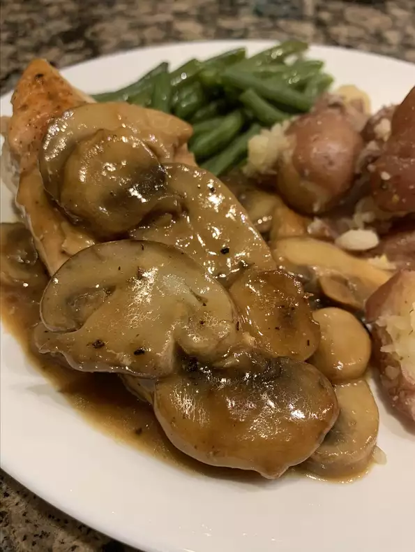

Pan-Fried Chicken Breast with Mushroom Gravy

Recipe of pan-fried chicken breast with mushroom gravy
Simple ingredients that you have in your pantry. This is an easy dish that tastes great.
Ingredients
- 4 (5 ounce) chicken breasts
- 1 teaspoon onion powder
- ½ teaspoon salt
- ½ teaspoon freshly ground black pepper
- 3 tablespoons olive oil
- 1 (8 ounce) package sliced fresh mushrooms
- 2 cloves garlic, sliced
- ¾ cup water
- ½¼ cup dry white wine
- 1 (1.25 ounce) envelope dry chicken gravy mix